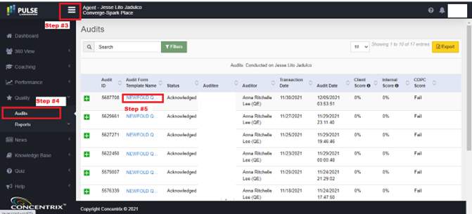
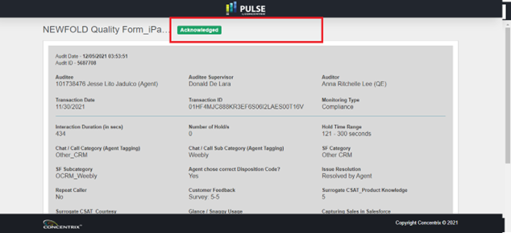

Before you beginYou can acknowledge or dispute an
audit within 48 hours after Quality Assurance completes it.
- Open Pulse.
- Log in with your CNX email address and password.
- If options are not shown in the left panel, click the menu.
- Under the Quality tab, click Audits.
- Click the audit template to view the result.
The screenshot below shows the menu and audit list.

- The Audit Report has options to Acknowledge or Dispute at the top. These options are unavailable
if the report has expired or has already been acknowledged.
The highlighted area shows the Acknowledge and Dispute options.

- Post a screenshot of your Pulse audit in the MS Teams Pulse Acknowledgement channel.